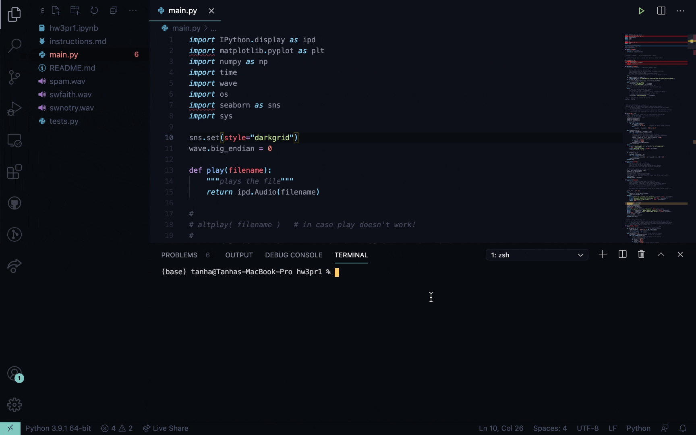
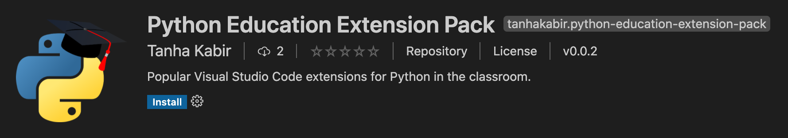
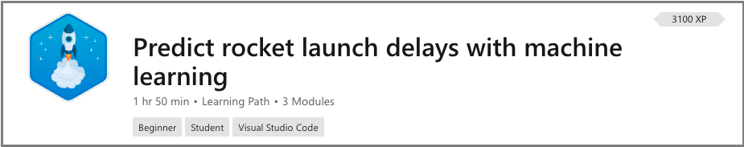
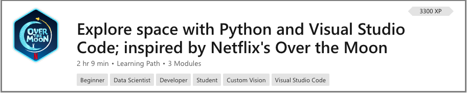
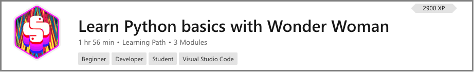
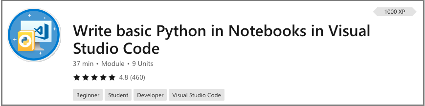
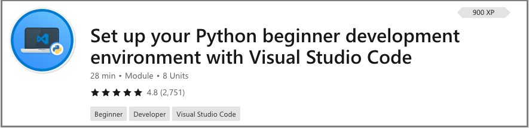

Python in Visual Studio Code
Visual Studio Code is a free source code editor that fully supports Python and useful features such as real-time collaboration. It's highly customizable to support your classroom the way you like to teach.
"Visual Studio Code is the best balance of authenticity and accessibility... Visual Studio Code doesn't feel 'fake', it's what real software developers use. Plus, Visual Studio Code works on every OS!" - Professor Zachary Dodds from Harvey Mudd College
Read below for recommendations for extensions, settings, and links to free lessons that you can use in your classes.
Intro to CS at Harvey Mudd College
Professor Zachary Dodds is a Computer Science professor at Harvey Mudd College who teaches several introductory classes both for students new to Computer Science and students from a non-Computer Science background. He co-created the popular introduction to Computer Science class CS5, which attracts students from all backgrounds to develop programming and problem-solving skills and to build "a coherent, intellectually compelling picture of Computer Science". The class is taught with Python and uses VS Code as the recommended editor.
Why Visual Studio Code?
Professor Dodds has been recommending and using Visual Studio Code in his classes since it debuted in 2015.
"Visual Studio Code is the best balance of authenticity and accessibility... Visual Studio Code doesn't feel 'fake', it's what real software developers use. Plus, Visual Studio Code works on every OS!"
VS Code runs on Windows, macOS, Linux, and even Chromebooks.
Classroom settings
Since VS Code is easy to customize, Professor Dodds is able to tailor the editor for his students, preferring to hide IntelliSense, or code completion suggestions, so they can learn from what they type and reinforce the conceptual models being built.
Here are the settings his students use:
"editor.quickSuggestions": false,
"editor.acceptSuggestionOnCommitCharacter": false,
"editor.suggest.filterGraceful": true,
"editor.suggestOnTriggerCharacters": false,
"editor.acceptSuggestionOnEnter": "on",
"editor.suggest.showIcons": false,
"editor.suggest.maxVisibleSuggestions": 7,
"editor.hover.enabled": false,
"editor.hover.sticky": false,
"editor.suggest.snippetsPreventQuickSuggestions": false,
"editor.parameterHints.enabled": false,
"editor.wordBasedSuggestions": true,
"editor.tabCompletion": "on",
"extensions.ignoreRecommendations": true,
"files.autoSave": "afterDelay",
You can find the most up-to-date settings on his course website: CS5 - Python Tips.
Integrated Terminal
Professor Dodds also utilizes the built-in terminal heavily in his class as an introduction to running programs from the command line and navigating around their machine all within Visual Studio Code. He appreciates how "the built-in terminal panel does not try to automate too much (which, if it did, would deprive newcomers of the experience of the information-flow that's going on)."
In the video below, the student does all of their command line and coding work in one place, such as installing Python libraries, while working on Lab 3 from the CS5 class:

Thank you, Professor Dodds, for sharing your story! If you’re interested in using VS Code to teach Python in your classes, you can get started with the Python Education Extension Pack below!
Python Extension Pack
Unsure which extensions to recommend to your students? You can point your students to the Python Education Extension Pack that contains essential and helpful extensions for the classroom. You can download the extension pack from the VS Code Marketplace:

The extension pack contains:
- Python for basic Python functionality like compiling, debugging support, linting, Jupyter Notebooks, unit tests, and more.
- Live Share to enable real-time collaboration and Live Share Audio to enable audio calls as well.
- Remote - SSH to work on remote projects (for example, to access lab machines) through SSH with full VS Code functionality.
- Markdown+Math for full LaTeX support in Markdown.
- Python Test Explorer for Visual Studio Code to visualize and run Python tests in the side bar.
- Code Runner to run snippets (selected code) and single files of any code with a single click.
Free Python and Data Science lessons
NASA-inspired lessons
This learning path enables students to use Python to explore doing analyses and projects inspired from real-world problems faced by National Aeronautics and Space Administration (NASA) scientists. View full details of the lessons under NASA-inspired Lessons.

Learn Python with Over The Moon
These space-themed lessons were inspired by the Netflix film, Over the Moon, and will introduce students to data science, machine learning, and artificial intelligence using Python and Azure. View full details on Learn Python with Over The Moon.

Wonder Woman-inspired lessons
Give an introduction to Python with "Wonder Woman 1984"-inspired lessons that help students learn about the basics like conditionals and variables. Get full lesson details under Learn Python with Wonder Woman.

Python in Notebooks
Learn the basics of Python. View the full lesson at Write basic Python in Notebooks in Visual Studio Code.

Set up your Python beginner development environment
A step-by-step guide to installing and setting up your Python and VS Code environment. View the full lesson at Set up your Python beginner development environment with Visual Studio Code.
